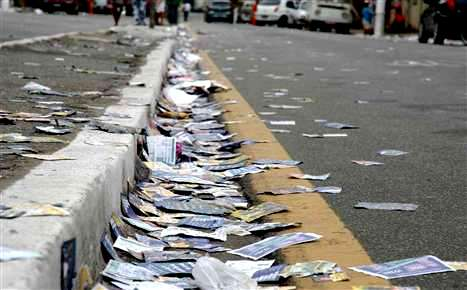

Poluição x Eleições 2020
Fonte da imagem:https://orlanoticias.com.br/tre-do-tocantins-intensifica-campanha-contra-sujeira-nas-ruas-durante-as-eleicoes-saiba-como-denunciar/
Neste ano, por conta do COVID-19, houve mais poluição sonora que o esperado, já que seria inapropriada a organização de comícios e o descarte inconsciente dos “santinhos” causou bastante sujeira no Brasil inteiro.
Samira Felix
Do Sesi José Alencar de Araguari
A distribuição de panfletos e a realização de carreatas quilométricas, que são feitos para a divulgação de candidatos, suas propostas e seus apoiadores, foram exacerbados nesse ano de eleições e, nas últimas semanas, só em Recife, foram recolhidas mais de 50 toneladas de folhetos eleitorais. Observa-se que há uma falta de conscientização dos cidadãos e eleitores, que ao descartar indevidamente os papeis podem causar enchentes e com os sons emitidos por suas buzinas e carros de som, perturbaram o popular próximo.
Os folhetos, ou “santinhos”, demonstram previamente os concorrentes a prefeitos, vereadores e deputados das diversas localidades brasileiras, mas não há um controle no espalhamento deles e nem em seus despojamentos, sendo comum ver nestas épocas bueiros, ruas, avenidas, enfim, cidades repletas de impressos das campanhas. O gerente geral de Fiscalização e Limpeza, Avelino Pontes, criticou o derramamento dos materiais de campanha tipificado como crime eleitoral no art. 39 da Lei 9.504/97, “A eficácia deles para a eleição eu não sei, mas para a limpeza urbana é péssima. Suja muito a cidade e quando começamos a fiscalizar os pontos de votação, a gente já encontra uma grande quantidade de santinhos jogados. Às 6h da manhã, já encontramos tudo muito sujo”.
Neste ano comícios foram evitados, por serem sinônimo de aglomerações, o que, graças ao COVID-19, está proibido, por ser um meio de rápido contagio do vírus e para compensar, os postulantes fizeram algumas caminhadas, que infelizmente causaram ainda certas concentrações de pessoas, também carreatas, onde o público apoiador seguia por um caminho com bandeiras e adesivos da campanha. Em alguns dos veículos passavam músicas para a memorização e indução ao voto do aspirante aos cargos diversos, já em outros o que predominava era o som de buzinas em diversos locais e horários.
Para as próximas eleições, aguarda-se mais responsabilidade no fazer e distribuir as informações eleitorais, mesmo que, ainda por folhetos, entretanto, o recolhimento adequado daquilo que desequilibra o ecossistema e entope redes de esgoto deve ser feito. E também que próximos pré-candidatos se importem mais com a população e pensem no mal que fazem a muitos ao propagar altos sons e ruídos.
Fonte de pesquisa: https://www.leiaja.com/politica/2020/11/13/poluicao-de-santinhos-no-dia-da-eleicao-preocupa-emlurb/